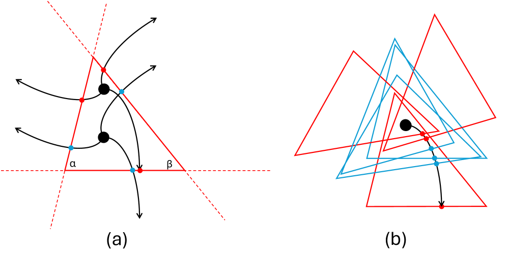

Appendix formalizes and proves Theorems 4-8 (support function characterizations for the triangular escape problem) in Lean 4 using Mathlib.
Abstract
In this paper, we present a general formulation to address the problems of covering curves and polygonal chains with triangle, and fitting these curves into triangle. These problems can be formulated as special cases of Bellman's lost-in-a-forest problem (escaping triangular forest) and Moser's worm problem (covered by triangle). We model and reformulate the problem by keeping the curve stationary while allowing the triangle to translate and rotate. Subsequently, we derive the functional minimization formulation with support function constraints to solve. We also prove the equivalence and convergence of the formulas. Finally, we employ numerical methods and present results for covering curves with arbitrary triangles of various angles. We also present some corollaries and variant results, including closed curves and closed polygonal chains.
Problem
Bellman's lost-in-a-forest problem and Moser's worm problem for arbitrary triangles lack a general algorithmic solution or proof. Existing results cover only special symmetric shapes.
Approach
The escape path across triangle orientations and locations is transformed into a stationary path with the triangle translating and rotating, converting the discretized problem into a Traveling Salesperson Problem with Neighborhoods. A functional minimization formulation with support function constraints is derived, and equivalence and convergence are proved. Theorems 4-8, including the exact support function constraint characterization, are formalized in Lean 4 using Mathlib.

Figure 1 : Proof concept for escaping from arbitrary triangle forest, and fitting worm into triangle
Results
Numerical solutions for covering curves and polygonal chains with arbitrary triangles at base angles in 5-degree increments are obtained, reproducing prior isosceles results and giving non-isosceles results for the first time.